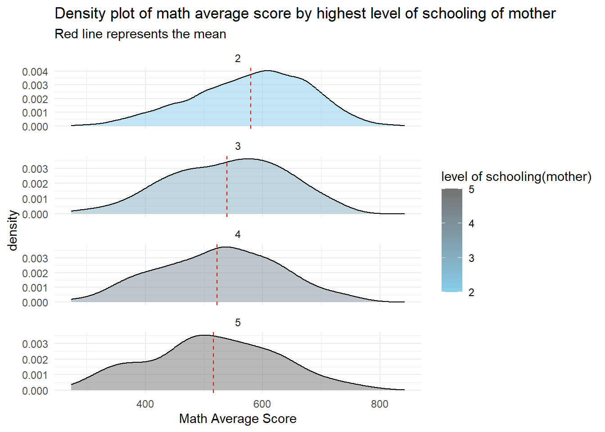

1. Overview
This document is intended for the evaluation of take-home exercise 1 by a fellow classmate, with criteria including clarity and aesthetics. Drawing upon the data visualization design principles and best practices learned in the ISSS608-VAA course, sketches for alternative design are prepared. The redesign is implemented using ggplot2, ggplot2 extensions, and tidyverse packages, while staying within the confines of the provided data set fields.
Review of Take-home Exercise 1
This exercise utilizes the PISA 2022 data set (referred to as the “student question data file”). The tasks are to use appropriate Exploratory Data Analysis (EDA) methods and ggplot2 functions to reveal:
- the distribution of Singapore students’ performance in mathematics, reading, and science.
- the relationship between these performances with schools, gender and socioeconomic status of the students.
2. Data Preparation
Use the same data preparation with the fellow classmate.
Show the code: Load data & Extract useful data
stu_qqq_SG <-
read_rds("data/stu_qqq_SG.rds")
student_columns <- "CNTSTUID"
gender_columns <- "ST004D01T"
school_columns <- "CNTSCHID"
education_column_mother <- "ST005Q01JA"
education_column_father <- "ST007Q01JA"
training_column_mother <- "ST006Q01JA"
training_column_father <- "ST008Q01JA"
possession_room_column <- "ST250Q01JA"
possession_computer_column <- "ST250Q02JA"
possession_software_column <- "ST250Q03JA"
possession_phone_column <- "ST250Q04JA"
possession_internet_column <- "ST250Q05JA"
possession_book_column <- "ST255Q01JA"
math_columns <- c("PV1MATH", "PV2MATH", "PV3MATH", "PV4MATH", "PV5MATH", "PV6MATH", "PV7MATH", "PV8MATH", "PV9MATH", "PV10MATH")
reading_columns <- c("PV1READ", "PV2READ", "PV3READ", "PV4READ", "PV5READ", "PV6READ", "PV7READ", "PV8READ", "PV9READ", "PV10READ")
science_columns <- c("PV1SCIE", "PV2SCIE", "PV3SCIE", "PV4SCIE", "PV5SCIE", "PV6SCIE", "PV7SCIE", "PV8SCIE", "PV9SCIE", "PV10SCIE")
student_ID <- stu_qqq_SG[, student_columns, drop = FALSE]
gender <- stu_qqq_SG[, gender_columns, drop = FALSE]
school_ID <- stu_qqq_SG[, school_columns, drop = FALSE]
education_mother <- stu_qqq_SG[, education_column_mother, drop = FALSE]
education_father <- stu_qqq_SG[, education_column_father, drop = FALSE]
training_mother <- stu_qqq_SG[, training_column_mother, drop = FALSE]
training_father <- stu_qqq_SG[, training_column_father, drop = FALSE]
possession_room <- stu_qqq_SG[, possession_room_column, drop = FALSE]
possession_computer <- stu_qqq_SG[, possession_computer_column, drop = FALSE]
possession_software <- stu_qqq_SG[, possession_software_column, drop = FALSE]
possession_phone <- stu_qqq_SG[, possession_phone_column, drop = FALSE]
possession_internet <- stu_qqq_SG[, possession_internet_column, drop = FALSE]
possession_book <- stu_qqq_SG[, possession_book_column, drop = FALSE]
math_avg <- rowMeans(stu_qqq_SG[, math_columns, drop = FALSE])
reading_avg <- rowMeans(stu_qqq_SG[, reading_columns, drop = FALSE])
science_avg <- rowMeans(stu_qqq_SG[, science_columns, drop = FALSE])
stu_df <- data.frame(Student_ID = student_ID,
Gender = gender,
School_ID = school_ID,
Education_mother = education_mother,
Education_father = education_father,
# Training_mother = training_mother,
# Training_father = training_father,
Possession_room = possession_room,
Possession_computer = possession_computer,
Possession_software = possession_software,
Possession_phone = possession_phone,
Possession_internet = possession_internet,
Possession_book = possession_book,
Math_Average = round(math_avg,digits=2),
Reading_Average = round(reading_avg,digits=2),
Science_Average = round(science_avg,digits=2),
Average_score=round(((math_avg+reading_avg+science_avg)/3),digits=2))
names(stu_df) <- c("Student_ID","Gender","School_ID","Education_mother",
"Education_father","Possession_room","Possession_computer",
"Possession_software","Possession_phone",
"Possession_internet","Possession_book","Math_Average",
"Reading_Average","Science_Average","Average_Score")
datatable(head(stu_df, n=5), options = list(dom='t'),
caption = "Data-frame 1: First 5 row of the student data",
rownames = FALSE) Show the code: Create Score_by_School dataframe
# Create Score_by_School dataframe
Score_by_School <- stu_df %>%
group_by(School_ID) %>%
summarize(
Math_Average = round(mean(Math_Average, na.rm = TRUE), digits = 2),
Reading_Average = round(mean(Reading_Average, na.rm = TRUE), digits = 2),
Science_Average = round(mean(Science_Average, na.rm = TRUE), digits = 2),
Average_score = round(mean(Average_Score, na.rm = TRUE), digits = 2)
)
# Print the Score_by_School dataframe
datatable(head(Score_by_School, n=5), options = list(dom='t'),
caption = "Table 2: First 5 row of School Average Scores",
rownames = FALSE) 3. Critique & Redesign
3.1 Chart 1
Original Design
Critique
Clarity:
Good Points:
- Specific values are labeled above each bar, facilitating comparison.
- Median and mean are marked with different colored dashed lines, accompanied by text and numerical values.
- The meaning expressed by the plot title and axes title is clear.
Weak Points:
- The overall shape of the histogram is not pronounced, lacking a curve to visually represent the distribution of data.
Aesthetics:
Good Points:
- Different colors are used to distinguish the filling and outline of the histogram.
- Consistency in color between dashed lines representing the same data and the color of text labels; a clear differentiation of colors for the median and mean.
Weak Points:
- There are too many data labels on the bars. For example, displaying data above the bars is unnecessary as the length differences between bars are already apparent, and adding data for comparison is not needed.
- The X-axis has an excessive number of ticks, while the Y-axis has few ticks.
Redesign
Show the code: redesign sketch
# Calculate histogram
hist_data <- hist(stu_df$Average_Score, breaks = 20, plot = FALSE)
# Find the position of the highest point
max_count <- max(hist_data$counts)
max_index <- which(hist_data$counts == max_count)
mode_x <- hist_data$mids[max_index]
# Calculate mean and median
average_sci <- mean(stu_df$Average_Score, na.rm = TRUE)
median_sci <- median(stu_df$Average_Score, na.rm = TRUE)
p1 <-ggplot(stu_df, aes(x = Average_Score)) +
geom_histogram(aes(y = ..density..), bins = 20, color = "grey95", fill = "cadetblue3",alpha=0.7) +
geom_density(color = "black", lwd = 1) +
# Add points for mean, median, and mode
geom_point(data = data.frame(x = c(average_sci, median_sci, mode_x),
y = c(0, 0, 0),
label = c("Mean", "Median", "Mode")),
aes(x = x, y = y, color = label), shape = 16, size = 3, show.legend = TRUE) +
labs(title = "Distribution of Total Average Scores",
x = "Total Average Score",
y = "Density",
color = "Data point") +
theme_clean() +
theme(legend.position = "top",
plot.background = element_rect(fill = "white", color = NA),
panel.background = element_rect(fill = "white", color = NA),
plot.title = element_text(hjust = 0.5, size = 25),
plot.subtitle = element_text(hjust = 0.5, size = 10),
axis.title = element_text(size = 12, face = "bold"),
axis.title.y = element_text(size = 12, face = "bold", angle = 0, vjust = 1),
axis.text = element_text(size = 10),
axis.text.y = element_text(size = 10),
plot.margin = margin(10, 10, 10, 10))
ggsave("images/Redesign1.jpg", width = 25, height = 15, units = "cm")
Optimized Points：
- Change the histogram to a density plot with both bars and curves, as a density plot can also depict the distribution of data.
- Increase the font size and bold the titles of the plot, X-axis, and Y-axis.
- Enlarge the scale of the X-axis and reduce the scale of the Y-axis.
- Add horizontal grid lines to facilitate readers in observing the probability density of the data intervals.
- Differentiate the positions of mean, median, and mode on the X-axis and Y-axis using different colors, and add a legend for the data points.
- Add a legend below the graph title and enclose it in a box.
The improvements made above allow readers to directly observe the distribution of the total average score: the skewness of curve and the size comparison of “mean < median < mode” both indicate that the data distribution of the total average score is left-skewed.
3.2 Chart 2
Original Design

Critique
Clarity:
- Good Points:
- The meaning of the horizontal and vertical axis scales and titles is very clear.
- The positions of the median and mean are marked in the graph, accompanied by specific numerical values and text.
- Horizontal gridlines are included.
- Data points are differentiated by color, and points with the same data type have consistent shapes and colors. A legend is provided alongside the graph to explain the color-coding.
- Outliers are represented by black dots.
- Week Points:
- Title is too long and lacks information; the chart depicts the distribution of mathematical scores grouped by gender, with a crucial lack of gender information in the title.
- Outliers are represented by black dots but have not been explained.
Aesthetics:
- Good Points:
- The groups of males and females are distinguished using colors.
- Week Points:
- The legend seems a bit redundant since the X-axis in the graph clearly distinguishes which plot corresponds to males and females; there is no need to include an additional legend.
- The title is positioned in the top right corner of the entire graph, creating an imbalance in the overall composition.
- The font size and positioning of the title and subtitle are close to each other.
Redesign
Show the code: redesign sketch
mean_values <- aggregate(Math_Average ~ Gender, data = stu_df, mean)
p2 <- ggplot(stu_df, aes(x = factor(Gender), y = Math_Average, fill = factor(Gender))) +
stat_slab(aes(thickness=after_stat(pdf*n)),scale=0.4)+
stat_dotsinterval(side="bottom", scale=0.4, slab_size=NA)+
geom_point(data = mean_values, aes(y = Math_Average),
color = "red", size = 2) +
stat_summary(fun = mean, geom = "text",
aes(label = paste("Mean:", round(..y.., 0))),
position = position_nudge(y = 0.5),
size = 3, vjust = 2, col="red") +
stat_summary(fun = median, geom = "text",
aes(label = paste("Median:", round(..y.., 0))),
position = position_nudge(y = 0.5),
size = 3, vjust = -1, col="black") +
scale_fill_manual(values = c("1" = "pink3", "2" = "cadetblue3"))+
scale_x_discrete(labels = c("1" = "Female", "2" = "Male"))+
labs(title = "Gender-Based Distribution of Math Scores",
subtitle = "(Black dot & Black text: Median score; Red dot & Red text: Mean score)",
x = "Gender",
y = "Math Score") +
theme_clean() +
theme(legend.position = "none",
plot.background = element_rect(fill = "white", color = NA),
panel.background = element_rect(fill = "white", color = NA),
plot.title = element_text(hjust = 0.5, size = 20),
plot.subtitle = element_text(hjust = 0.5, size = 10),
axis.title = element_text(size = 12, face = "bold"),
axis.title.y = element_text(size = 12, face = "bold", angle = 0, vjust =0.5),
plot.margin = margin(10, 20, 10, 10))+
coord_flip()
ggsave("images/Redesign2.jpg", width = 20, height = 15, units = "cm")
Optimized Points：
- The main title and axis titles in the graph have been bolded and enlarged. The graph title is centered, and there is a difference in font size between the main title and the subtitle.
- The titles have been modified, incorporating the key information of “gender.”
- The original horizontal and vertical axes have been swapped to increase the overall width of the graph.
- The violin plot has been replaced with a raincloud plot. In the raincloud plot, the “cloud” part is equivalent to a half-violin plot, serving the same function as the original violin plot. The “rain” part of the raincloud plot is a scatter plot, illustrating the differences in the number of individuals in each score range.
- The width/height of the boxplot has been increased, presenting it as a slightly thicker line in the middle, where the thicker part represents the box.
- Data points are represented as dots, with different colors filling different types of data points. Text is included to indicate the data type and value. The size of points for different data types reflects the magnitude of the values. For example, if the median is greater than the mean, the shape of the mean point is larger than that of the median point.
The improved graph facilitates readers in comparing the distribution of math scores among different gender groups. Horizontally, the position, color, and values of data points can be compared within and between groups.
3.3 Chart 3
Original Design
Critique
Clarity:
- Good Points:
- Some of the outliers are labeled text.
- Week Points:
- The tick labels on the horizontal axis are unclear and do not clearly represent their specific meanings.
- The meanings of the text labels have not been explained.
- It is not always clear which outlier point the text labels are pointing to.
- The positions of the medians in the box plot are too close, and there are no reference lines for comparison.
Aesthetics:
- Good Points:
- The plots for different groups have been designed in different colors.
- Week Points:
- The title is positioned too far to the left, affecting the overall symmetry of the graph.
- The font size of axis titles and tick labels is too close.
- There are too many text labels, contributing to clutter.
Redesign
Show the code: redesign sketch
# Define Score by choosing a specific type, e.g., Math_Average
Score_long <- Score_by_School %>%
pivot_longer(
cols = c("Math_Average", "Reading_Average", "Science_Average", "Average_score"),
names_to = "Score_Type",
values_to = "Score"
)
# Calculate outliers using the IQR method
outliers <- Score_long %>%
group_by(Score_Type) %>%
summarize(
lower_limit = quantile(Score, 0.25) - 1.5 * IQR(Score),
upper_limit = quantile(Score, 0.75) + 1.5 * IQR(Score)
) %>%
left_join(Score_long, by = "Score_Type") %>%
filter(Score < lower_limit | Score > upper_limit)
# Identify the top 3 and bottom 2 schools for each Score_Type
selected_schools <- outliers %>%
group_by(Score_Type) %>%
arrange(desc(Score)) %>%
slice_head(n = 2) %>%
bind_rows(
outliers %>%
group_by(Score_Type) %>%
arrange(Score) %>%
slice_head(n = 2)
)
# Custom fill colors
custom_fill_colors <- c("Math_Average" = "mistyrose3",
"Reading_Average" = "paleturquoise3",
"Science_Average" = "darkolivegreen3",
"Average_score" = "#d8b1d4")
# Plot box plot with selected outlier labels
p3 <- ggplot(Score_long, aes(x = Score_Type, y = Score, fill = Score_Type)) +
geom_violin(position = position_nudge(y = 0), side = "r", width = 0.6, color = NA, alpha = 0.5) +
geom_boxplot(notch=TRUE, width = 0.2, size = 0.3, outlier.color = "grey10", outlier.shape = 1) +
scale_color_manual(values = custom_fill_colors) + # Set color scale for Score_Type
scale_shape_manual(values = rep(16, length(unique(selected_schools$School_ID)))) + # Set shape for each unique School_ID
geom_text_repel(data = selected_schools, aes(label = School_ID, x = Score_Type, y = Score),
box.padding = 0.8, point.padding = 0.5, max.iter = 500,
size = 3, color = "red", nudge_x = 0.1) +
geom_point(data = selected_schools, aes(x = Score_Type, y = Score), color = "red", size = 1) + # Add geom_point
geom_hline(yintercept = 550, linetype = "dashed", color = "blue", lwd = 0.5) + # Add red dashed horizontal line
geom_text(aes(x = 1, y = 550, label = "550"), color = "blue", vjust = 1.5,hjust= 4.5, size = 3) + # Add label at Y-axis value of 550
labs(title = "Score Distributions by Score Type",
subtitle = "(Red texts represent School ID;\nThe red dot is the data point of the nearest School ID; Black circles are outliers. )",
x = "Score Type",
y = "Score") +
scale_fill_manual(values = custom_fill_colors) +
scale_x_discrete(labels = c("Average_score" = "Total Average", "Math_Average" = "Math", "Reading_Average" = "Reading", "Science_Average" = "Science")) +
theme_clean() +
theme(legend.position = "none",
plot.background = element_rect(fill = "white", color = NA),
panel.background = element_rect(fill = "white", color = NA),
plot.title = element_text(hjust = 0.5, size = 20),
plot.subtitle = element_text(hjust = 0.5, size = 10),
axis.title = element_text(size = 13, face = "bold"),
axis.title.y = element_text(size = 13, face = "bold", angle = 0.8, vjust = 0.5),
axis.text = element_text(size = 10),
axis.text.y = element_text(size = 10),
legend.text = element_text(size = 10),
legend.title = element_text(size = 10),
plot.margin = margin(10, 20, 10, 10))
ggsave("images/Redesign3.jpg", width = 20, height = 25, units = "cm")Optimized Points:
- Title and subtitle are centered, and both are bolded and enlarged.
- Groups are renamed as “Total Average,” “Math,” “Reading,” and “Science” to clarify the meaning of the Score Types for the reader.
- Text labels are reduced, and both text labels and their corresponding points are filled in red. This enhances the directional connection between text labels and points.
- The subtitle explains the meaning, color, and purpose of data points and text labels.
- A horizontal reference line at a score of 550 is added for easier comparison with the median.
- The original box plot is transformed into a combination of a box plot and a violin plot.
- Different transparencies are applied to the box plot and the violin plot to facilitate reader observation.
The improved graph combines both the box plot and the violin plot, making it more convenient for readers to analyze from different perspectives. Readers can now observe which schools perform exceptionally well or poorly by comparing the text labels. The addition of horizontal reference lines facilitates the comparison of median scores across different Score Types. The number of peaks in the violin plot also allows readers to identify distinct groups of schools, with one group scoring between 500-600 (larger quantity) and another group scoring between 600-700 (smaller quantity).
3.4 Chart 4
Original Design

Critique
Clarity:
- Good Points:
- Red dashed lines are used to indicate the positions of the means, and a legend has been added to explain the colors corresponding to different groups.
- Week Points:
- It’s unclear what ISCED levels 2, 3, 4, and 5 represent.
- It’s unclear whether the four density plots share the same X-axis scale.
Aesthetics:
- Good Points:
- Different groups have been distinguished by color, and the colors are gradient because the groups are related.
- The mean lines are designed as red dashed lines.
- Week Points:
- The density plot has different Y-axis density scales.
- The plot title is too long.
- The subtitle is off-center to the left, affecting the symmetry of the graph.
- The starting scale value on the X-axis is too large, causing some group density plots to be incomplete.
Redesign
Show the code: redesign sketch
# Define the conversion rules
stu_df <- stu_df %>%
mutate(Education_level = case_when(
Education_mother == 5 ~ "Did not complete <ISCED level 1>",
Education_mother == 4 ~ "<ISCED level 1>",
Education_mother == 3 ~ "<ISCED level 2>",
Education_mother == 2 ~ "<ISCED level 3.3>",
TRUE ~ as.character(Education_mother) # Keep other values as is
))
# Calculate the cumulative distribution function (CDF) for Math_Average
cdf_values <- ecdf(stu_df$Math_Average)
# Create a new variable for tail probability based on CDF
stu_df <- stu_df %>%
mutate(Tail_Probability = 0.5 - abs(0.5 - cdf_values(Math_Average)))
p4 <- ggplot(na.omit(stu_df), aes(x = Math_Average, y = Education_level, fill = 0.5 - abs(0.5 - stat(ecdf)))) +
stat_density_ridges(geom = "density_ridges_gradient", calc_ecdf = TRUE, bandwidth = 45) +
labs(title = "Mother's Education Level vs. Math Score Distribution",
x = "Math Score",
y = "Education Level",
fill = "Density of Math Score") +
theme_classic() +
theme(legend.position = "right",
plot.background = element_rect(fill = "white", color = NA),
panel.background = element_rect(fill = "white", color = NA),
plot.title = element_text(hjust = 0.5, size = 30, face = "bold"),
plot.margin = margin(20,20,20,20),
axis.title = element_text(size = 15, face = "bold"),
axis.title.y = element_text(size = 15, face = "bold"),
axis.text = element_text(size = 15),
axis.text.y = element_text(size = 15,margin = margin(t = 1, r = 0, b = 0, l = -10)),
legend.text = element_text(size = 15),
legend.title = element_text(size = 15))
ggsave("images/Redesign4.jpg", width = 30, height = 20, units = "cm")Optimized Points：
- The plot title is centered, and both the title and axis titles are bold and enlarged.
- The title has been renamed to make it straightforward and concise.
- Groups are now named according to ISCED level and are presented on the Y-axis, while the X-axis represents math scores.
- Density curves are filled with gradient colors, where lighter colors indicate higher density. The color gradient rules are explained in the legend on the right side of the graph.
- The red mean lines have been removed. Instead, comparisons between groups are made using gradient color and peak of the density plot, as the central light portion of the gradient color precisely represents the 50% position.
The improved graph clearly illustrates the density distribution of mathematics scores for different ISCED levels. By comparing the positions of the peaks in each graph or examining the location of the lightest color areas, readers can understand the differences in mathematics scores among children of mothers with different educational levels. For instance, in the graph, when the mother’s education level is ISCED level 3.3, their children tend to have higher mathematics scores compared to other levels. This is because the position of the lightest color area is furthest to the right, indicating that the higher 50% of the children are distributed in the higher score range. In contrast, the 50% score range for children in the other three levels is relatively lower.
4. Learning Points
Choosing the appropriate type of visualization during the visualization process is crucial. We can integrate different types of graphics together for a comprehensive analysis.
Adding data points is essential; specific numerical values facilitate better comparisons and analysis.
Selecting suitable colors is crucial; gradient colors can be used for related groups, while unrelated groups should be represented with different colors.
Not all graphs require legends; when differentiation is clear through axes or data labels, legends may be omitted.
For added text labels, it’s important to provide explanations in the graph regarding the color, purpose, and significance of data or text of the same type; this information can be included in subtitles.
The dimensions of the graph should be thoughtfully designed, as they impact the size of the visualization. Excessive length may result in narrow or small graphics, while insufficient width may lead to overly narrow gaps between graphics. Consider flipping the axis if necessary.
The size of axis tick marks should be appropriate to avoid incomplete plots.
Naming of groups and titles should be done carefully to ensure easy understanding for readers